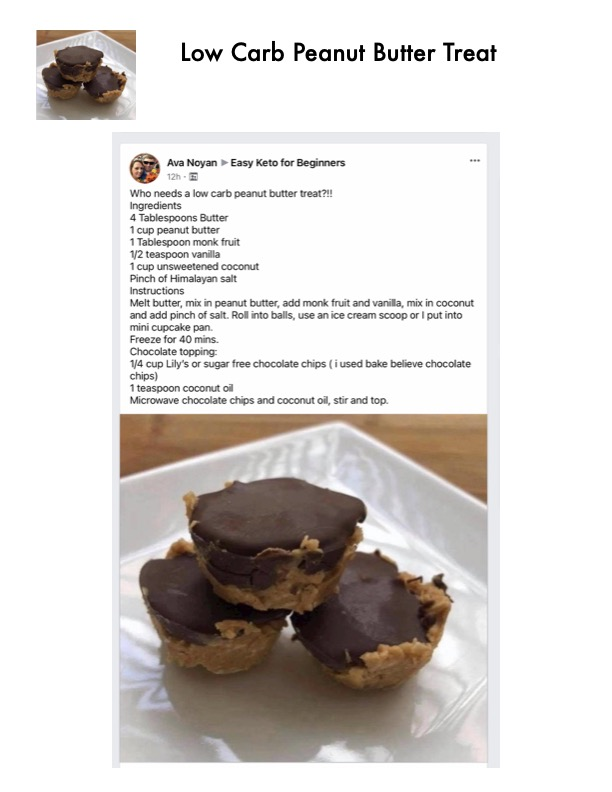

Low Carb Peanut Butter Treat

Original cookbook page 195
Keto-friendly, low-carb dessert resembling mini peanut butter cups with a coconut-peanut butter base and sugar-free chocolate topping.
Prep: 10 minutes • Total: 50 minutes
Ingredients
- 4 tablespoons butter
- 1 cup peanut butter
- 1 tablespoon monk fruit
- 1/2 teaspoon vanilla
- 1 cup unsweetened coconut
- Pinch of Himalayan salt
- 1/4 cup Lily's or sugar-free chocolate chips (author used Bake Believe chocolate chips)
- 1 teaspoon coconut oil
Instructions
- Melt butter, mix in peanut butter, add monk fruit and vanilla.
- Mix in coconut and add pinch of salt.
- Roll into balls, use an ice cream scoop or put into mini cupcake pan.
- Freeze for 40 minutes.
- Chocolate topping: Microwave chocolate chips and coconut oil, stir until combined.
- Top the peanut butter balls/cups with the melted chocolate mixture.
Recipe #195 from collection